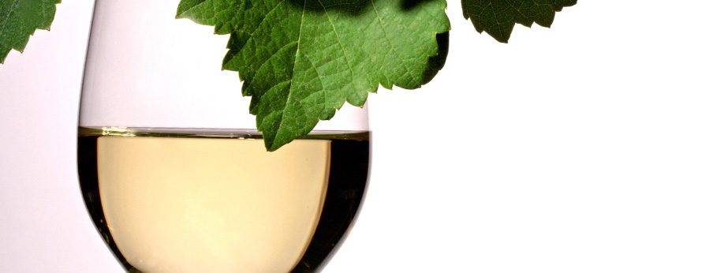
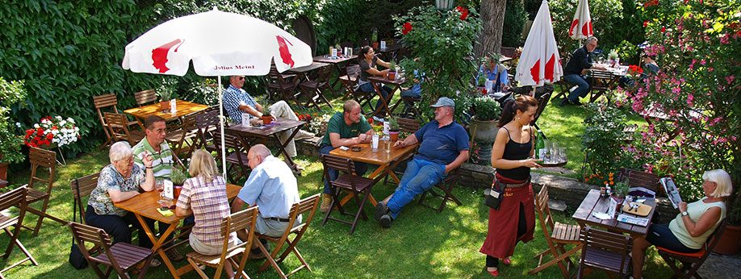
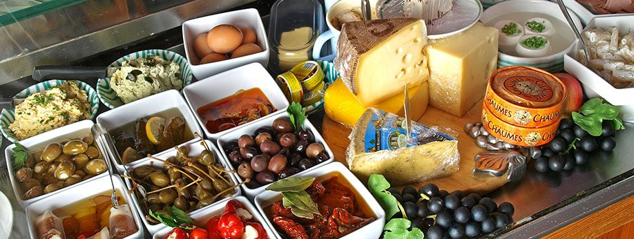

Schmankerl-Karte
Die warme Karte im Spätsommer – von der Kürbisrösti bis zum Roastbeef-Flammkuchen, vieles auf Wunsch vegan.
Unverbindliche Gestaltungs-Vorschau · keine offizielle Website des Heurigen Österreicher · erstellt von AVOS Solutions
Bahngasse 19 · 2511 Pfaffstätten · Thermenregion
Wir entführen Sie nicht in die Welt des Weines – das überlassen wir den Sommeliers. Wir laden Sie nicht zur kulinarischen Expedition – das überlassen wir den Haubenköchen. Wir wollen genau das, was Sie wollen, wenn Sie zum Heurigen gehen: dass Sie sich wohlfühlen.
Tisch reservieren Schmankerln ansehen

Aktuell
16.10. – 1.11.
ausg'steckt
Kürbissuppe, Flammkuchen, Roastbeef auf Blattsalat, Hannahs Nougatknöderl – unsere Karte wechselt mit der Jahreszeit. Dazu die Buffetvitrine mit Aufstrichen, Käse und allem, was man sich zu einem Achterl wünscht.
Die warme Karte im Spätsommer – von der Kürbisrösti bis zum Roastbeef-Flammkuchen, vieles auf Wunsch vegan.
Eine eigene, ausschließlich glutenfreie Karte. Unsere Tochter ist Zöliakie-Betroffene, wir kennen uns aus: vom Surschnitzel bis zum Guglhupf.
Regelmäßig ein Gericht aus der Familienchronik. Zuletzt: Paprikahendl mit hausgemachten Nockerln (31.8.) und Augsburger mit Erdäpfelpüree (7.9.).

Beste Lagen? Logisch. Hervorragende Qualität? Eh klar. Oder haben Sie schon einmal von einem Winzer gehört, der seinen Wein als „Untrinkbar Nordhang“ angepriesen hat? Unsere Weine stammen aus eigenen Weingärten im Umkreis von zwei Kilometern.
2.Okt
KulturCuvée Pfaffstätten, 19:30 Uhr (Einlass 18:00), Eintritt € 12,–. Veranstalter: Heuriger Polt-Österreicher.
13.Nov
KulturCuvée Pfaffstätten, 19:30 Uhr, bei uns im Heurigenlokal. Bitte unbedingt reservieren.
50Cent
Von jeder Suppe, die 2026 bei uns gegessen wird, spenden wir 50 Cent an die „Gruft“ der Caritas – das gilt für die Suppen der Schmankerl-Karte ebenso wie für die Fritattensuppe am Wochenende.
120 Plätze im Lokal, gut 100 im Garten – Stehplätze nicht gerechnet. Wenn Sie das Lokal nicht mit fremden Leuten teilen wollen, borgen wir es Ihnen. Auf unseren Service müssen Sie dabei nicht verzichten.
Geburtstage, Trauerfeiern, Hochzeiten, Scheidungen, Firmengründungen, Kündigungen, Weihnachtsfeiern, Ostereiersuchen, Taufen, Firmungen, Diavorträge, Ansprachen, Jubiläen: Sagen Sie uns, wann Sie mit wie vielen Freunden, Feinden, Verwandten oder Bekannten kommen wollen. Wir beraten Sie.

1950 kaufte Elisabeth Österreicher eine Brandruine in der Bahngasse. Vier Jahre später hieß es für Leopold und Elfriede Österreicher zum ersten Mal „Ausg'steckt is'“ – damals noch im Freien. Heute führt Elfriede Polt-Österreicher, Weinbau- und Kellermeisterin, den Betrieb in dritter Generation.